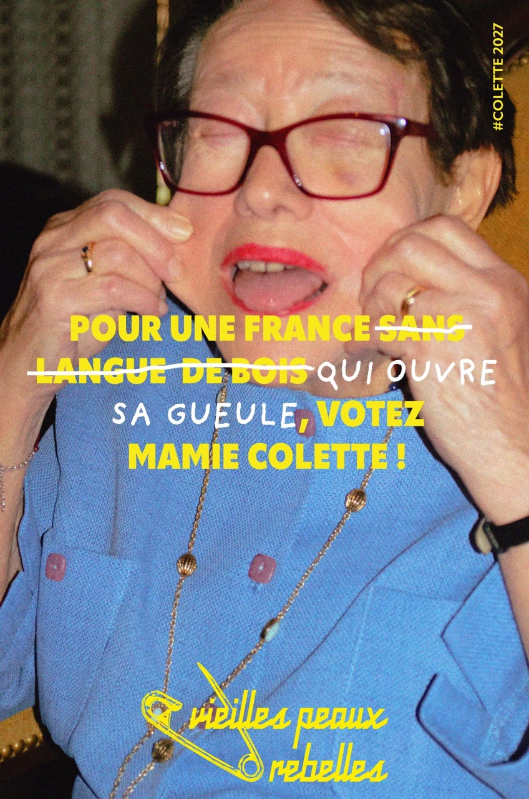
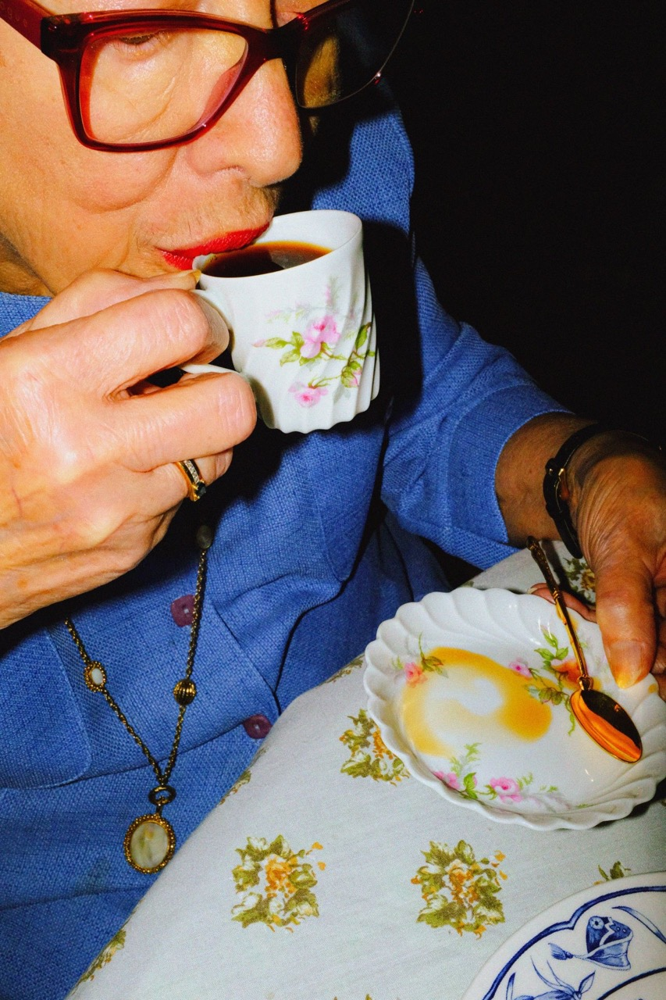

Fictional political campaign project created in collaboration with Margaux PETITJEAN, Tao Vivier and Vivienne Huynh.
We imagined Mamie Colette, 82, running for the 2027 presidential elections and founding the party "The Rebellious Old Skins". An unexpected, gentle, slightly cheeky figure who suggests that politics might be better if it simply started… with a conversation over tea. The goal was to move away from the usual codes of political communication, often very polished and very serious, to create something more human, warm and openly playful. A visual universe that twists slogans, plays with clichés and invents another way of speaking.
And this is where design becomes interesting! It is a space of freedom, where we can imagine other possibilities, tell stories differently, and even allow a bit of mischief.